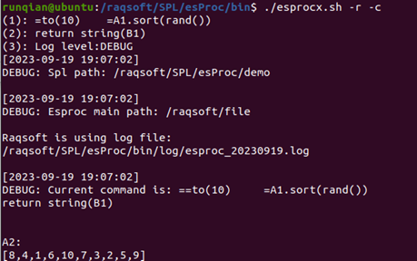

6.3 JDBC gateway
You can choose to skip this section if you are not a professional programmer. This won¡¯t affect your learning about the other contents of this Tutorial.
When calling an esProc script via JDBC, we can create a SQL gateway by configuring a dfx script file, and let it handle all the SQL statements to be executed in JDBC. The gateway script reads in the SQL statements and their parameters, handles database connection, and then executes SQL and returns results. Below is a gateway script executeSQL.dfx:
|
|
A |
B |
|
1 |
=connect("demo") |
|
|
2 |
if args==null || args.len()<2 |
>B1=A1.query(sql) |
|
3 |
else |
>B1=A1.query(sql,args(1),args(2)) |
|
4 |
>A1.close() |
return B1 |
The dfx file uses two parameters:

The above two parameters are necessary. The first passes the SQL statements that have been input at the call of the esProc script. The second passes parameters input for executing the SQL statements.
To use the JDBC gateway, we need to specify the gateway script file in <gateway> under raqsoftConfig.xml¡¯s <JDBC> node. To connect a data source, load the data source connection configuration from Runtime or Server:
<JDBC>
<load>Runtime</load>
<gateway>executeSQL.dfx</gateway>
</JDBC>
See Configuring raqsoftConfig.xml to learn more about JDBC tag libraries.
With required configuration done, all the SQL statements will be handed over to the gateway script for execution during the invocation of esProc JDBC from Java. For example:
// Execute SQL; the question mark (?) represents the parameter
st =con.prepareCall("select * from CITIES where STATEID = ? and POPULATION > ?");
// Set parameters
st.setObject(1, 5);
st.setObject(2, 400000);
// Execute the stored procedure
st.execute();
// Get the result set
ResultSet rs1 = st.getResultSet();
// Directly execute SQL with no input parameters
ResultSet rs2 = con.createStatement().executeQuery("select STATEID,NAME,ABBR,CAPITAL from STATES where STATEID<8");
Since the gateway script has checked the status of the non-input parameters, it can execute SQL with no input parameters. Below are the outputs of the query results rs1 and rs2:

The connection to and disconnection from a data source are handled by the gateway script. With a default data source, we can directly use its name in executing a query and there is no need to handle data source disconnection.